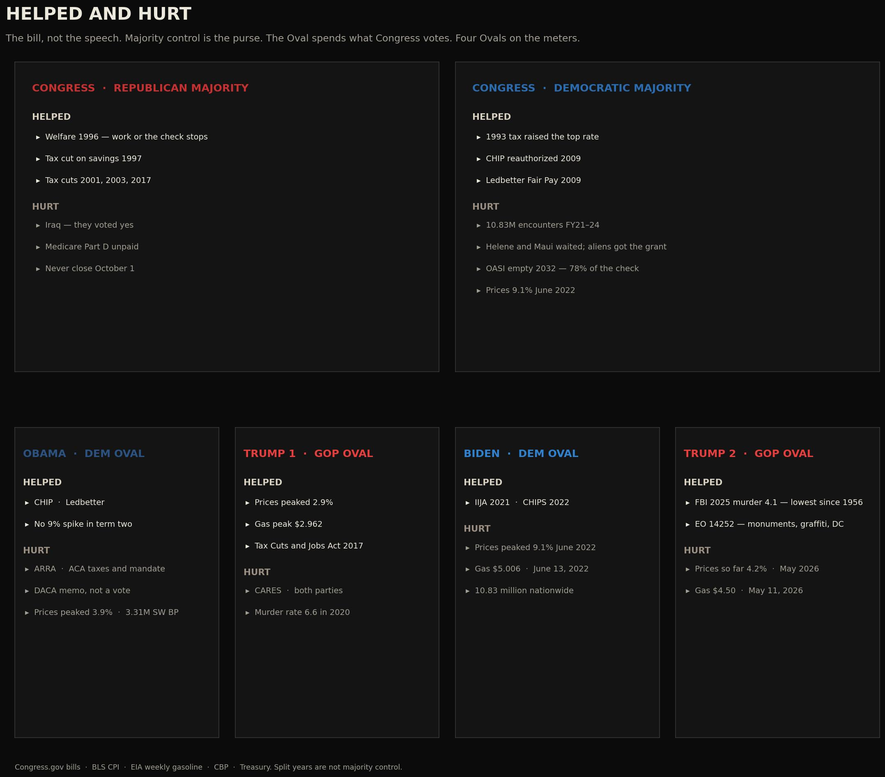
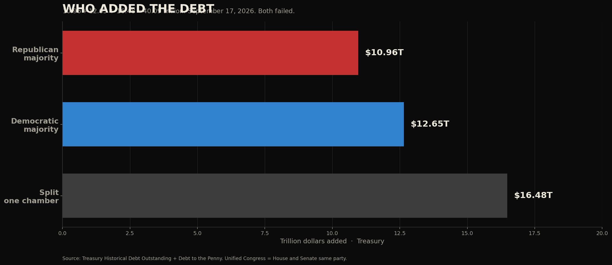
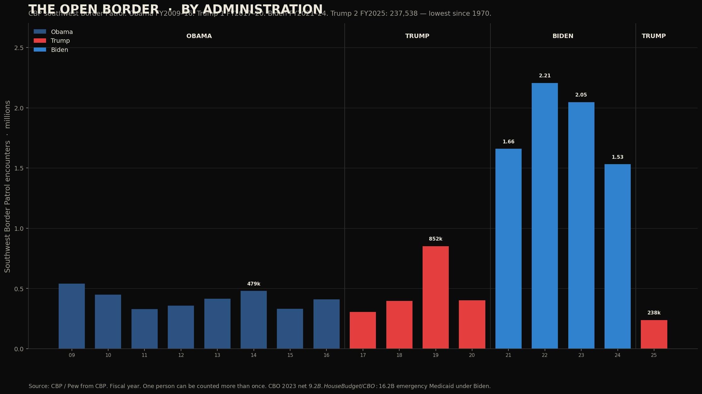
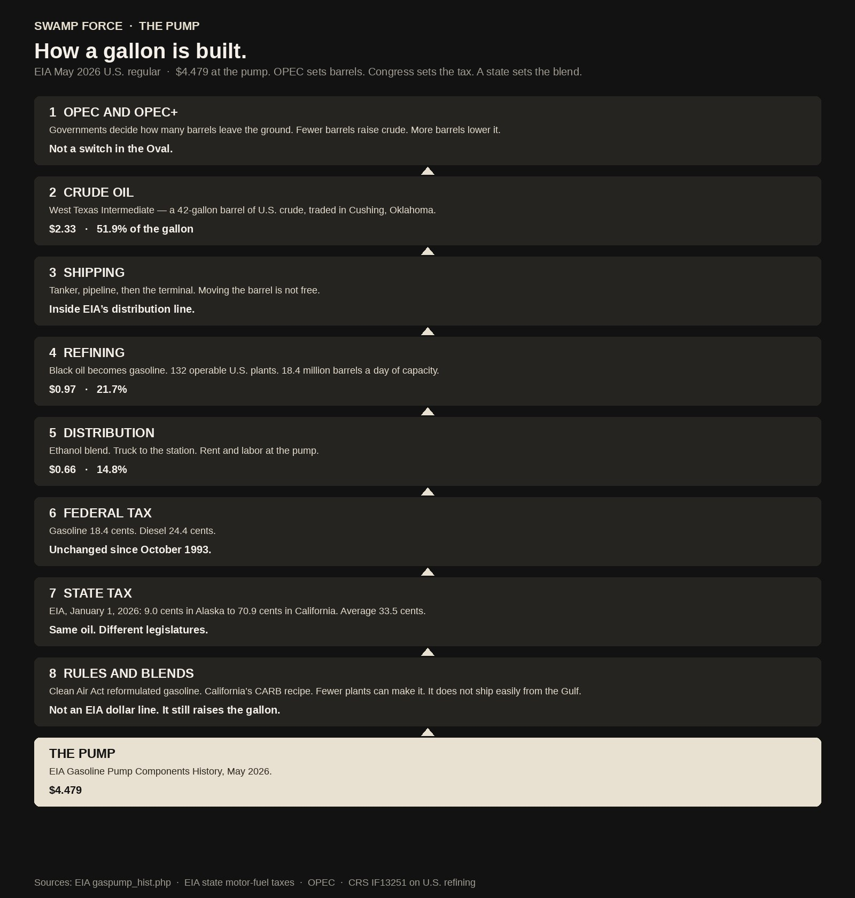
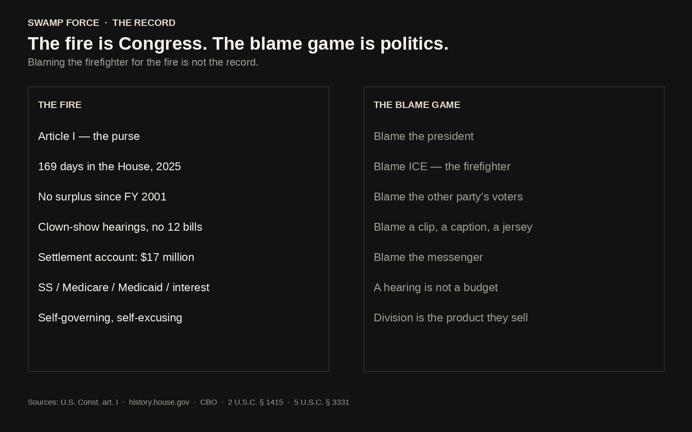

The record, not the rerun
Vote the file.
Not the feeling.
263 claims about a president in the catalog; 129 checked by us against the original record so far.
Midterms · Tuesday, Nov 3, 2026 ↓Our View
Why SwampForce exists
Don't judge them by what they tell you. Judge them by what they do.
We cannot honestly look at these numbers and look away. The official record shows unprecedented government action to interfere in an election, and taxpayer money spent on hoax after hoax. These are the people trusted to oversee our nation.
Read moreShow less
Based on the official record and my research, I believe our government no longer serves us. It lies to us and chooses our leaders for us, and the networks go along, airing identical broadcasts dressed up with opinion. This is the Betrayal of America and of every US citizen.
An election cannot fix deception on this scale. It only continues it. We are no longer represented in Washington.
Let me be clear: I am not calling for violence. I am calling on every American who loves this country to turn off the noise, boycott the networks and politicians who deceive us, and start digging into the corruption. No one person can expose it all. We are 300 million. They are few.
Let's take our country back peacefully and patriotically. Expose the corruption and the collusion, and demand an Article V Convention of States to put We the People back in control.
Trump may not be perfect, but he is one of us: a citizen who wants the corruption to stop.
This is our only chance. We must act now.
— SwampForce Editor

The Great American Betrayal
21 new verified cases (2015–2026)

Midterms
Who ran Congress. What it cost.

For Lawmakers
Staff brief + evidence appendix

Debt & Spending
The purse, the debt, the members

Lawfare
10 dockets, key rulings
Biden Family Records
Bank reports, pardons, research in progress

The Border
Encounters by fiscal year

Voters
Voters & population: the raw numbers

Energy
Gas, insurance, medicine: who actually sets the price?

Fake News
129 verified cases

Not Yet Verified
Claims no one has proven
The dispatch
Publishing now


Read more: from the original front pageHide
From the original edition, restored as written. Figures that changed since are shown at today’s values: 263 cases in the catalog (129 verified, 131 still being checked, 3 set aside); national debt $40.07T (Treasury, Debt to the Penny, Sep 24, 2026).
Midterms
The scorecard
Vote the facts. Every number is a government file.